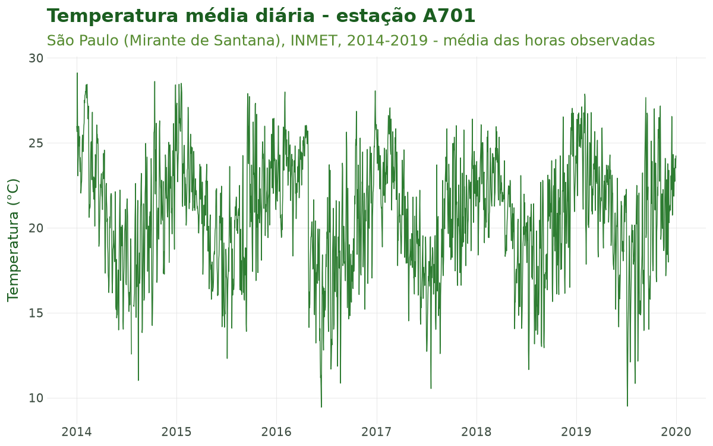
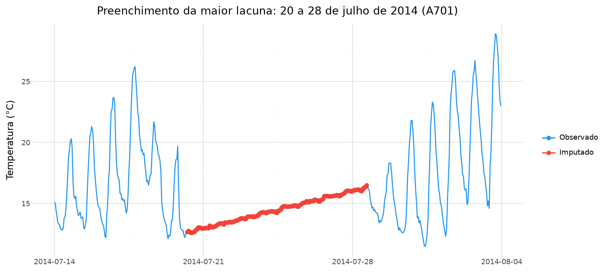
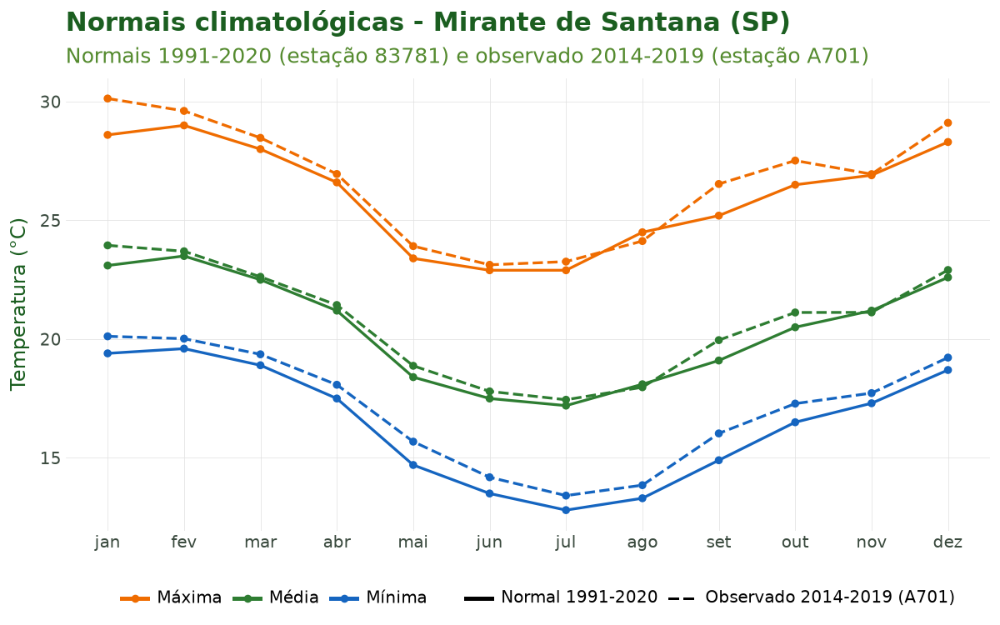
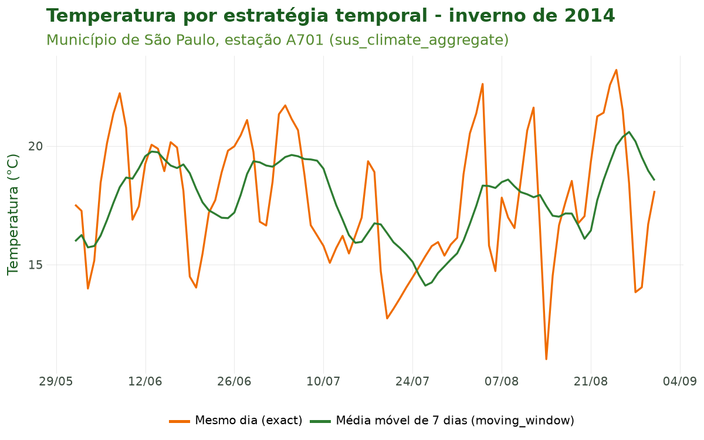

Tutorial 7: Integração Climática por Estações (INMET)¶
← Voltar para a Trilha do Pipeline
Objetivo¶
Ao final deste tutorial você será capaz de trazer a dimensão climática observada para o pipeline usando dados das estações meteorológicas do Instituto Nacional de Meteorologia (INMET). Especificamente, você aprenderá a:
- Importar a série horária de uma estação com
sus_climate_inmet(); - Preencher lacunas da série com modelos de aprendizado de máquina (XGBoost) por estação,
com
sus_climate_fill_inmet(); - Visualizar o resultado do preenchimento (observado vs imputado) com
sus_climate_plot_fill(); - Consultar as normais climatológicas de 30 anos com
sus_climate_normals(), que servem de linha de base climatológica; - Alinhar a série climática à série de saúde usando estratégias temporais
epidemiologicamente fundamentadas (mesmo dia, defasagem, janela móvel...) com
sus_climate_aggregate().
Esta é a sétima etapa do pipeline (estágio climate). Ela conecta a série de saúde ao clima
observado, produzindo a base exposição × desfecho que alimentará a etapa de clima em grade
(Tutorial 8) e a modelagem (Tutorial 9).
Contexto científico¶
A epidemiologia ambiental relaciona exposições climáticas a desfechos de saúde. No Brasil, as estações automáticas do INMET fornecem observações horárias de temperatura, umidade, precipitação, pressão e vento, com cobertura nacional crescente desde os anos 2000. Diferentemente de produtos de reanálise em grade (Tutorial 8), os dados de estação medem o ambiente in situ, com alta resolução temporal, mas com representatividade espacial limitada ao entorno da estação (Saldanha et al., 2019; Geirinhas et al., 2018).
Três desafios metodológicos atravessam esta etapa:
- Qualidade e lacunas. Sensores falham; séries têm valores faltantes e inconsistências físicas. O preenchimento por modelos como o XGBoost (Chen & Guestrin, 2016) recupera lacunas a partir de padrões temporais (defasagens, ciclos diário e sazonal) e funciona bem em lacunas curtas. Em lacunas longas, de vários dias, o modelo fica sem as horas vizinhas em que se apoia — por isso vale olhar o tamanho das lacunas antes de confiar no preenchimento (Figura 2).
- Linha de base climatológica. As normais climatológicas (médias de 30 anos) definem o clima de referência de cada local — essencial para contextualizar anomalias e definir o ponto de referência de modelos de resposta dose-exposição (Gasparrini, 2011).
- Alinhamento temporal causal. O efeito do calor ou do frio sobre a saúde raramente é instantâneo: há defasagens (efeitos retardados) e acúmulo (exposição cumulativa). A escolha da estratégia temporal deve refletir o mecanismo biológico hipotetizado (Bhaskaran et al., 2013; Gasparrini et al., 2010), e jamais usar o clima futuro para explicar um evento presente (viés de antecipação).
Caso condutor. Investigamos temperatura e desfechos de saúde em idosos (60+) na Região Metropolitana de São Paulo (RMSP), 2014–2019. Nesta etapa, importamos a série da estação de referência da RMSP — São Paulo – Mirante de Santana (código A701) —, preenchemos suas lacunas, consultamos as normais e alinhamos a temperatura à série diária de óbitos respiratórios dos oito municípios do caso.
Dados utilizados¶
| Fonte | Função | Papel no caso |
|---|---|---|
| Série horária INMET, estação A701 (RMSP), 2014–2019 | sus_climate_inmet() |
Exposição climática observada |
| Série A701 com lacunas preenchidas (XGBoost) | sus_climate_fill_inmet() |
Série contínua de temperatura |
| Normais climatológicas 1991–2020 | sus_climate_normals() |
Linha de base climatológica |
| Série diária de óbitos respiratórios de idosos (Tutoriais 1 a 5) | sus_climate_aggregate() |
Desfecho a ser alinhado |
Todos os dados são públicos e reais (INMET e DATASUS).
Pipeline completo¶
Os blocos abaixo reproduzem o que o script
tools/tutoriais/tutorial_07_clima_estacoes.py
executa. Carregue o pacote:
Importar a série da estação (A701)¶
sus_climate_inmet() baixa os dados horários do INMET (um arquivo por ano, guardado em cache),
padroniza os nomes das colunas para nomes canônicos (ex.: tair_dry_bulb_c, rh_mean_porc,
rainfall_mm) e aplica controle de qualidade físico. Filtramos pela estação de referência da RMSP
via station_code:
clima_horario = cs.sus_climate_inmet(
years=[2014, 2015, 2016, 2017, 2018, 2019],
uf="SP",
station_code="A701", # São Paulo - Mirante de Santana
use_cache=True, # guarda os arquivos baixados e já lidos
lang="pt",
)
clima_df = clima_horario.df()
O retorno tem frequência horária, com datas em UTC (horário de Brasília + 3 h). Como as
próximas funções trabalham com tabelas do pandas, materializamos a série com .df().
Preencher lacunas com XGBoost¶
sus_climate_fill_inmet() ajusta um modelo XGBoost por estação e por variável, criando
automaticamente atributos temporais (hora, dia, mês, transformações cíclicas), defasagens e
estatísticas móveis. Primeiro avaliamos a acurácia (modo avaliação), depois preenchemos de fato
(modo produção):
# Modo AVALIAÇÃO: esconde 20% das horas observadas e mede o erro ao recuperá-las
aval = cs.sus_climate_fill_inmet(
clima_df,
target_var="tair_dry_bulb_c",
quality_threshold=0.4, # exclui estações com mais de 40% de faltantes
run_evaluation=True,
gap_percentage=0.2, # 20% de lacunas artificiais
lang="pt",
)
aval["tair_dry_bulb_c"]["metrics"] # MAE, RMSE, R² e número de horas avaliadas
# Modo PRODUÇÃO: preenche as lacunas reais e adiciona a coluna is_imputed_<variável>
clima_preenchido = cs.sus_climate_fill_inmet(
clima_df,
target_var="tair_dry_bulb_c",
quality_threshold=0.4,
run_evaluation=False,
keep_features=False, # devolve só as colunas originais + a marcação
lang="pt",
)
Para imputar todas as variáveis canônicas do INMET de uma vez, use target_var="all".
Visualizar o preenchimento¶
sus_climate_plot_fill() desenha a série observada com os pontos imputados destacados. Para ver
uma lacuna de perto, passe só o trecho que interessa — aqui, as três semanas em torno da maior
lacuna da A701:
# Série inteira
cs.sus_climate_plot_fill(clima_preenchido, clima_df, target_var="tair_dry_bulb_c", lang="pt")
# Aproximando a maior lacuna (20 a 28 de julho de 2014)
inicio, fim = "2014-07-14", "2014-08-04"
trecho_preenchido = clima_preenchido[(clima_preenchido["date"] >= inicio) & (clima_preenchido["date"] < fim)]
trecho_original = clima_df[(clima_df["date"] >= inicio) & (clima_df["date"] < fim)]
cs.sus_climate_plot_fill(trecho_preenchido, trecho_original, target_var="tair_dry_bulb_c", lang="pt")
Consultar as normais climatológicas¶
sus_climate_normals() baixa as normais de 30 anos do INMET. Escolhemos o período mais recente e
as variáveis de temperatura. As normais são publicadas para as estações convencionais, que têm
código numérico: o Mirante de Santana é a 83781 (a A701 é a estação automática do mesmo local).
normais = cs.sus_climate_normals(
period="1991-2020", # ou "1961-1990", "1981-2010"
target_var=["t_max", "t_min", "t_mean_comp"],
use_cache=True,
lang="pt",
)
mirante = normais[normais["codigo"] == "83781"]
# Para explorar os códigos de variável disponíveis antes:
# cs.sus_climate_normals_meta(period="1991-2020", lang="pt")
Alinhar clima e saúde (estratégias temporais)¶
sus_climate_aggregate() liga cada registro de saúde à estação mais próxima e aplica a estratégia
temporal escolhida. Ela recebe a série de saúde já com o município espacializado (saída de
sus_spatial_join(), Tutorial 5). Montamos a série diária de óbitos respiratórios de idosos pelo
município de residência — o lugar a cujo clima a pessoa estava exposta:
# Série de saúde: os passos dos Tutoriais 1 a 5, agora com contagem diária
obitos = cs.sus_data_import(system="SIM-DO", uf="SP", year=[2014, 2015, 2016, 2017, 2018, 2019])
obitos_limpo = cs.sus_data_clean_encoding(obitos)
obitos_padr = cs.sus_data_standardize(obitos_limpo, lang="pt")
RMSP = ["São Paulo", "Guarulhos", "São Bernardo do Campo", "Santo André",
"Osasco", "Mauá", "Carapicuíba", "Diadema"]
resp_idosos = cs.sus_filter(obitos_padr, groups="respiratory", age_min=60, city=RMSP)
obitos_vars = cs.sus_data_create_variables(
resp_idosos,
age_breaks=[60, 70, 80, 999],
age_labels=["60-69", "70-79", "80+"],
climate_region="sudeste",
lang="pt",
)
serie_diaria = cs.sus_data_aggregate(obitos_vars, time_unit="day", join_col="residencia", lang="pt")
saude_espacial = cs.sus_spatial_join(serie_diaria, geo_level="municipality", join_col="residencia", lang="pt")
Aqui a série é montada sem complete_dates=True: com essa opção, sus_data_aggregate() devolve
uma tabela do pandas, que sus_spatial_join() não aceita. Os dias sem óbito ficam de fora da
série, o que não muda o alinhamento dos dias com óbito.
Comparamos a exposição do mesmo dia (exact) com a janela móvel de 7 dias
(moving_window, recomendada para exposição cumulativa):
# Exposição aguda (mesmo dia)
saude_exact = cs.sus_climate_aggregate(
saude_espacial,
clima_preenchido,
temporal_strategy="exact",
climate_vars=["tair_dry_bulb_c"],
)
# Exposição cumulativa (média móvel retroativa de 7 dias: t-6 .. t)
saude_movel = cs.sus_climate_aggregate(
saude_espacial,
clima_preenchido,
temporal_strategy="moving_window",
window_days=7,
climate_vars=["tair_dry_bulb_c"],
)
Com exact, cada dia recebe a média diária da temperatura (tair_dry_bulb_c); com
moving_window, recebe também a média dos 7 dias até ele (tair_dry_bulb_c_mean_w7). Os
primeiros dias de 2014 ficam sem a média móvel, porque a janela pediria dias de 2013, que não foram
importados. Como só importamos a A701, os oito municípios recebem o clima dessa estação.
Ao final desta etapa temos saude_exact e saude_movel — a série de saúde com a temperatura
alinhada, base para o Tutorial 8.
Características das funções¶
sus_climate_inmet()¶
Importa, padroniza e controla a qualidade dos dados horários do INMET.
| Argumento | Essencial? | Descrição |
|---|---|---|
years |
recomendado | Ano(s), de 2000 ao ano atual (ex.: [2014, 2015]); sem ele, usa os 2 últimos |
uf |
recomendado | UF(s) ("SP", ["RJ", "MG"]); sem ela, baixa as 27 UFs |
station_code |
opcional | Filtra estações por código ("A701"); sem ele, todas da UF |
use_cache / cache_dir |
recomendado | Guarda os arquivos baixados e os anos já lidos (padrão ~/.climasus4py_cache/climate) |
parallel / workers |
opcional | Processa os anos em paralelo |
lang / verbose |
opcional | Idioma ("pt", "en", "es") e progresso |
Retorno: uma relação do DuckDB (materialize com .df()), frequência horária, datas em
UTC, colunas canônicas e metadados da estação (nome, código, coordenadas, data de fundação).
Controle de qualidade automático: validação de faixas físicas e consistência do ponto de
orvalho (fórmula de Magnus).
sus_climate_fill_inmet()¶
Imputa valores faltantes com XGBoost, um modelo por estação por variável.
| Argumento | Essencial? | Descrição |
|---|---|---|
df |
sim | Série horária do INMET (sus_climate_inmet(...).df()) |
target_var |
sim | Coluna(s) a imputar, ou "all" (todas as variáveis canônicas) |
quality_threshold |
recomendado | Máximo de faltantes por estação (padrão 0.4) |
run_evaluation |
opcional | True cria lacunas artificiais e devolve métricas |
gap_percentage |
opcional | Proporção de lacunas artificiais na avaliação (padrão 0.2) |
keep_features |
opcional | True mantém os atributos criados (defasagens, médias móveis) |
parallel / workers |
opcional | Processa estações em paralelo |
datetime_col / station_col |
opcional | Nomes das colunas; detectados se omitidos |
lang / verbose |
opcional | Idioma e mensagens |
Retorno (produção): a mesma tabela com target_var imputada e a coluna
is_imputed_<variável> (True nas horas preenchidas). Retorno (avaliação): um dicionário por
variável, com ["data"] e ["metrics"] (MAE, RMSE, R² e número de horas avaliadas, por estação).
sus_climate_plot_fill()¶
Visualiza o preenchimento: a série observada em linha e os pontos imputados em destaque.
| Argumento | Essencial? | Descrição |
|---|---|---|
df_filled |
sim | Saída de sus_climate_fill_inmet() (modo produção) |
df_original |
opcional | Série antes do preenchimento |
target_var |
sim | Variável a visualizar |
station |
opcional | Código da estação; sem ele, a primeira da tabela |
output_type |
opcional | "plot" (padrão) ou "all" (gráfico e dados) |
color_palette |
opcional | Cores de observado e imputado |
lang |
opcional | Idioma dos rótulos |
Retorno: o gráfico (um objeto do plotnine), ou um dicionário com o gráfico e os dados.
sus_climate_normals()¶
Baixa as normais climatológicas de 30 anos do INMET.
| Argumento | Essencial? | Descrição |
|---|---|---|
period |
recomendado | "1961-1990", "1981-2010" ou "1991-2020" (padrão) |
target_var |
opcional | Códigos de variável (["t_max", "t_min"]); sem ele, todas |
use_cache / cache_dir |
recomendado | Cache em disco do catálogo e dos arquivos |
lang / verbose |
opcional | Idioma e progresso |
Retorno: uma tabela em formato longo com codigo, nome_estacao, uf, mes, decada,
valor, var_code e rótulos em três idiomas. Companheira: sus_climate_normals_meta() lista os
códigos de variável disponíveis.
sus_climate_aggregate()¶
Liga o clima à saúde pela estação mais próxima e aplica a estratégia temporal.
| Argumento | Essencial? | Descrição |
|---|---|---|
health_data |
sim | Série de saúde com o município espacializado (saída de sus_spatial_join()) |
climate_data |
sim | Série climática (saída de sus_climate_fill_inmet() ou de sus_climate_inmet()) |
climate_vars |
recomendado | Variável(is) climática(s); "all" (padrão) |
temporal_strategy |
sim | Uma das 10 estratégias (veja abaixo) |
window_days |
condicional | Tamanho da janela (móvel, graus-dia, limiar, ponderada) |
lag_days |
condicional | Defasagem(ns) para discrete_lag / máxima para distributed_lag |
offset_days |
condicional | [W1, W2] para offset_window |
temp_base / gdd_temp_var |
condicional | Base térmica e variável para degree_days |
threshold_value / threshold_direction |
condicional | Limiar para *_exceedance |
climate_region |
opcional | "auto" (padrão), "tropical", "subtropical", "temperate" |
min_obs |
opcional | Proporção mínima de observações válidas na janela (padrão 0.7) |
max_distance_km |
opcional | Distância máxima entre município e estação |
Estratégias temporais (temporal_strategy): exact, discrete_lag, moving_window,
offset_window, distributed_lag, degree_days, seasonal, threshold_exceedance,
cold_wave_exceedance, weighted_window. Todas olham só para o passado do evento: a média móvel
de 7 dias do dia t usa os dias t−6 a t.
Retorno: uma relação do DuckDB com os dados de saúde e as variáveis climáticas como novas colunas.
Resultados ilustrados¶

Figura 1. Temperatura média diária observada na estação A701 (São Paulo – Mirante de Santana), 2014–2019. A sazonalidade de inverno (menores temperaturas entre junho e agosto) é nítida e será o eixo do alinhamento com a mortalidade de idosos.
Tabela 1. Cobertura e lacunas da série importada (antes do preenchimento).
| Item | Valor |
|---|---|
| Estação | A701 — São Paulo (Mirante de Santana) |
| Período | 01/01/2014 a 31/12/2019 |
| Horas na série | 52.584 |
| Horas sem temperatura | 344 (0,65%) |
| Lacunas (trechos contínuos) | 6 |
| Maior lacuna | 203 h (cerca de 8,5 dias), a partir de 20/07/2014 |

Figura 2. A maior lacuna da A701, aproximada com sus_climate_plot_fill(): 203 horas, de 20 a
28 de julho de 2014. Nos dias observados em volta, a temperatura sobe e desce de 5 °C a 13 °C entre
a noite e a tarde; dentro da lacuna, o valor imputado sobe quase em linha reta de 12 °C para 16 °C,
sem o ciclo diário. É o limite do método: sem horas vizinhas observadas, o modelo não tem de onde
tirar a oscilação do dia. Em lacunas curtas (Tabela 2), o erro é pequeno; em lacunas de vários
dias, prefira marcar os dias preenchidos (is_imputed_tair_dry_bulb_c) e avaliar se devem entrar
na análise.
Tabela 2. Métricas de avaliação do preenchimento (20% das horas observadas escondidas ao acaso e recuperadas pelo modelo).
| Estação | MAE (°C) | RMSE (°C) | R² | Horas avaliadas |
|---|---|---|---|---|
| A701 | 0,54 | 0,88 | 0,962 | 10.448 |

Figura 3. Ciclo anual das normais climatológicas de temperatura (1991–2020) do Mirante de Santana (linhas cheias) e a média observada na A701 em 2014–2019 (linhas tracejadas). As normais fornecem a linha de base contra a qual anomalias e extremos são medidos nos tutoriais seguintes: em quase todos os meses, 2014–2019 foi mais quente que a normal, sobretudo nas mínimas e em setembro e outubro.

Figura 4. Exposição à temperatura por estratégia temporal no inverno de 2014, no município de
São Paulo: o valor do mesmo dia (exact) oscila mais, enquanto a média móvel de 7 dias
(moving_window) suaviza o sinal e captura a exposição cumulativa — escolha que reflete o
mecanismo biológico de interesse no modelo final. Entre 20 e 28 de julho, o trecho reto da curva do
mesmo dia é a lacuna preenchida da Figura 2 chegando ao alinhamento.
Referências¶
- Bhaskaran, K., Gasparrini, A., Hajat, S., Smeeth, L., & Armstrong, B. (2013). Time series regression studies in environmental epidemiology. International Journal of Epidemiology, 42(4), 1187–1195.
- Chen, T., & Guestrin, C. (2016). XGBoost: A scalable tree boosting system. Proceedings of the 22nd ACM SIGKDD, 785–794.
- Gasparrini, A. (2011). Distributed lag linear and non-linear models in R: the package dlnm. Journal of Statistical Software, 43(8), 1–20.
- Gasparrini, A., Armstrong, B., & Kenward, M. G. (2010). Distributed lag non-linear models. Statistics in Medicine, 29(21), 2224–2234.
- Geirinhas, J. L., et al. (2018). Climatic and synoptic characterization of heat waves in Brazil. International Journal of Climatology, 38(4), 1760–1776.
- Saldanha, R. de F., Bastos, R. R., & Barcellos, C. (2019). Microdatasus: pacote para download e pré-processamento de microdados do DATASUS. Cadernos de Saúde Pública, 35(9), e00032419.
- INMET — Instituto Nacional de Meteorologia. Dados históricos. Disponível em: https://portal.inmet.gov.br/dadoshistoricos.
Navegação¶
- Voltar para a Trilha do Pipeline
- Anterior: Tutorial 6 — Vínculo Socioeconômico
- Próximo: Tutorial 8 — Clima em Grade e Dados Ambientais (em preparação)